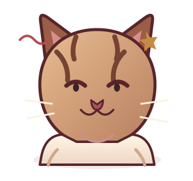

00
♡
Gathering every little memory…
Getting everything ready · 0%
one little memory, kept close ♡
THE PRIVATE REWIND

What’s this cat called? Get it right and Aya’s birthday rewind is all yours. Hehe.
One tiny cat question before you enter.
Gathering every little memory…
one little memory, kept close ♡